世界曲風與樂團合奏
第 18 章・建議學習 1 小時
本章重點
- 曼陀林不是「只屬於一種音樂」的樂器。同一件樂器，在不同傳統裡有完全不同的右手語法與合奏角色。
- 判斷一種風格，要看四件事：拍點放在哪裡、音拉多長、裝飾怎麼加、合奏時誰負責什麼。
- 藍草音樂（bluegrass）裡的曼陀林有兩份工作：領奏（lead）與切音伴奏（chop）。只會一種，等於只學了一半。
- 曼陀林樂團最常見的毛病，是所有高音聲部同時顫音，把中高頻塞得太滿。
- 真正的「跨風格」不是換一把琴，而是換一套時間感與裝飾語彙。
開場：一件樂器，很多種音樂
曼陀林最有趣的地方之一，是它並沒有只屬於一種音樂。
它出現過的地方很多：
- 十八世紀義大利的室內樂與協奏作品
- 十九世紀的沙龍（salon）與曼陀林樂團（mandolin orchestra）
- 那不勒斯歌曲
- 美國的曼陀林熱潮（mandolin craze）
- 老式弦樂隊（old-time string band）
- Bill Monroe 之後的藍草音樂
- 愛爾蘭舞曲
- 巴西的秀羅（choro）
- 爵士樂
- 二十一世紀的創作歌手、電影配樂、電曼陀林跨界
這些傳統用的可能都叫「mandolin」。但右手語法、音長（note length）、伴奏位置、音色、合奏角色，並不一樣。
所以學風格時，要一起掌握四件事：拍點、音長、裝飾、合奏分工。
真正的問題是這幾個：
- 這個傳統怎麼處理「時間」？
- 旋律和伴奏，誰先誰後？
- 需要多少延音（sustain）？
- 重音落在哪裡？
- 即興和看譜，各佔多少？
本章把技法放回歷史與合奏情境裡。這樣「風格」才不會只是表面模仿。
18.1 古典與巴洛克曲目
今天很多演奏者，會把韋瓦第（Vivaldi）、胡麥爾（Hummel）、貝多芬（Beethoven）和曼陀林有關的作品，放進現代八弦 G–D–A–E 樂器的曲目裡。
但歷史上的曼陀林（mandolino）不一定長成今天的樣子。
不同城市、不同年代，用過羊腸弦（gut strings）、不同數量的弦組、不同調弦。
所以「這首曲子原作是寫給曼陀林的」這句話，還要先問一句：寫給哪一種曼陀林？
不能直接假設它和現代樂器完全一樣。
現代演奏當然可以用標準曼陀林。但只要配器一改，效果就會變。
羊腸弦古琴的起音（attack）、延音、力度反應，都和現代鋼弦不同。
有些連續分解和弦（arpeggio）在現代金屬弦上更明亮。有些長音則要靠顫音（tremolo）重新塑形。
負責任的演奏，重點是知道自己做了哪一種「翻譯」。
到了十九世紀，義大利演奏家與教育家建立了更明確的現代曼陀林技法。
穆尼耶（Munier）、卡拉切（Calace）的教本，把顫音、把位（positions）、雙音（double stops）、裝飾音（ornaments）系統化。〔S1801〕〔S1802〕
今天古典曼陀林的許多核心語法，就是從這裡來的。
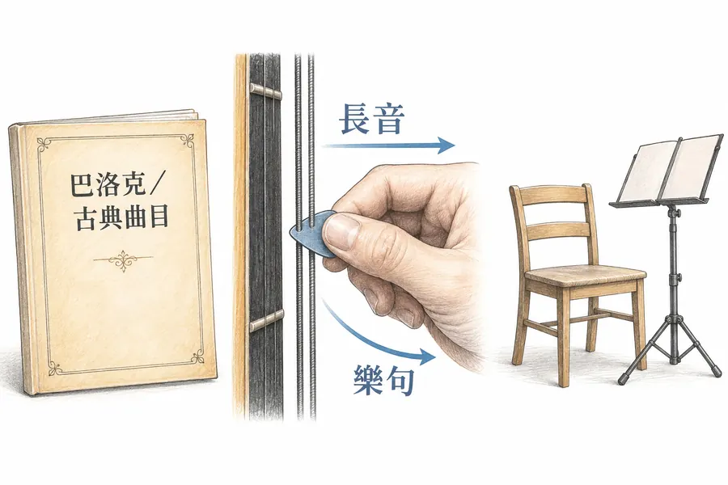
圖解 18.1 古典與巴洛克曲目（示意）
常見誤解：譜上寫「為曼陀林而作」，就代表現代曼陀林可以照原樣彈。
其實歷史上的曼陀林有不同弦數、不同調弦、不同弦材。同一首曲子放到不同型制上，音量、延音、音色都會變。這不是錯，這叫「改編」。重點是知道自己改了什麼。
18.2 那不勒斯歌曲
那不勒斯歌曲常讓人聯想到曼陀林。這個文化連結，是在十九世紀後期到二十世紀的大眾傳播中慢慢固定下來的。
但實際伴奏不只是「一直顫音」。
旋律樂器、歌者、吉他伴奏之間，是有呼吸的。
曼陀林可能負責間奏（interlude）、副旋律（countermelody）、分解和弦，或裝飾性的顫音。
如果是在伴奏歌手，最重要的一件事是：不要和人聲的子音起音（consonant attack）搶位置。
顫音可以稍微晚一點點進入，等字頭出來再跟上。句尾再收掉。
只有在間奏時，才把音量與音色往前推。
這種「退後／前進」的合奏意識，比從頭到尾維持同樣音量，更接近真正的歌唱伴奏。
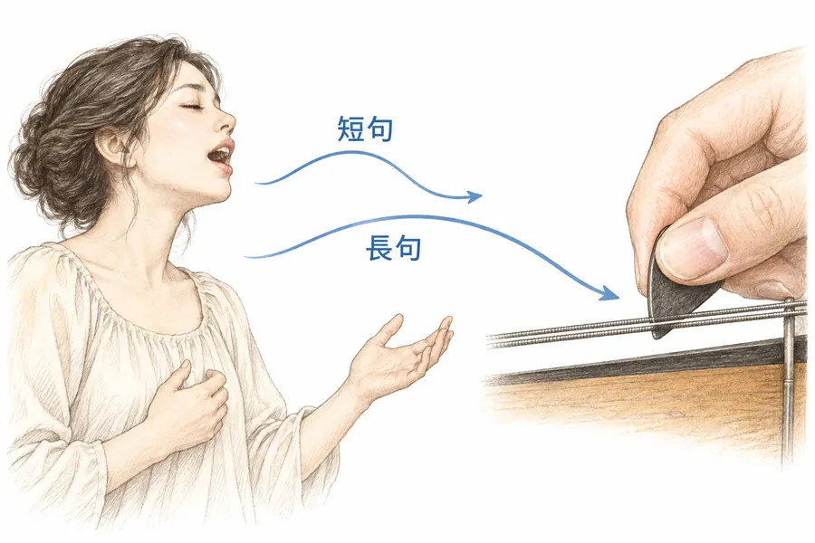
圖解 18.2 那不勒斯歌曲（示意）
常見誤解：「曼陀林就是那不勒斯民謠樂器」。
這是被觀光文化簡化後的印象。現代觀光常把曼陀林變成義大利的刻板符號。它在義大利文化中確實重要，但歷史上它擔負的功能，遠比單一形象廣得多。專業寫作要避免這種「反向定義」。
18.3 美國曼陀林熱潮與合奏
美國國會圖書館（Library of Congress）整理的美國曼陀林歷史指出：
1880 年代開始的熱潮，和五件事密切相關。
這五件事是：巡演、商業表演、樂器製造、出版市場、學校社團。
到了 1890 年代，美國各地的曼陀林社團（mandolin clubs）與樂團大量出現。
「斑鳩琴、曼陀林與吉他」（Banjo, Mandolin and Guitar，簡稱 BMG）文化，把職業演奏者、教師、製造商、業餘社團串成一條完整產業。〔S1803〕
這段歷史很重要。因為它提醒我們一件事：
美式曼陀林並不是從義大利移民一路直接跳到 Bill Monroe。
在藍草音樂出現之前幾十年，美國就已經有大量合奏教材、方法書，以及各種家族樂器。
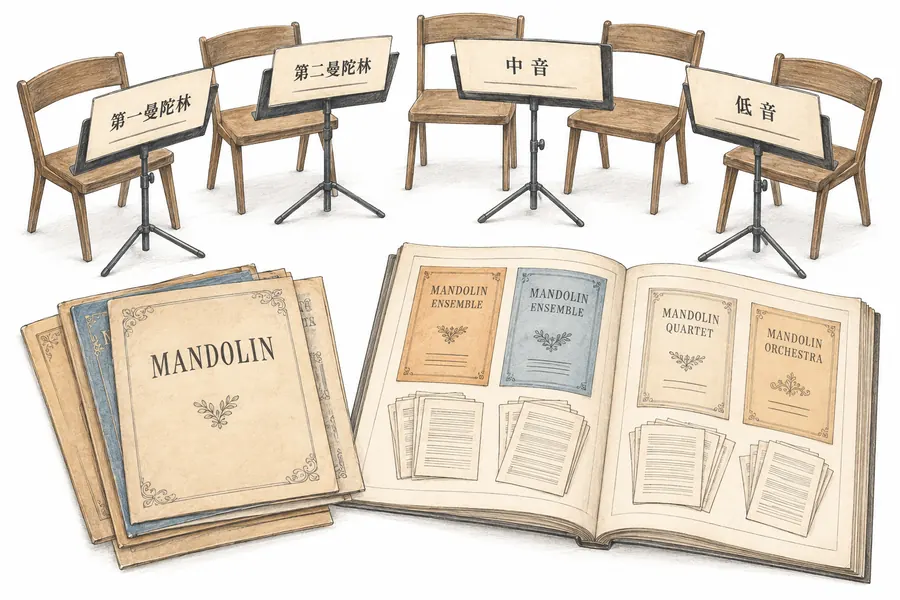
圖解 18.3 美國曼陀林熱潮與合奏（示意）
國會圖書館保存的 1915 年《婦運者進行曲》（The Suffragettes: March），甚至明列出曼陀林樂團的編制。
裡面包含：多把曼陀林、曼陀拉（mandola）、曼陀大提琴（mandoloncello）、吉他、斑鳩琴、鋼琴。
這直接證明了當時的樂團化程度。〔S1804〕
這套合奏傳統，也推動了三件事：大型家族樂器、通用記譜法（universal notation）、製造業發展。
懂了這段背景，才會明白 Gibson 後來做曼陀拉、曼陀大提琴、曼陀低音琴（mando-bass），重點是在回應當時的樂團市場。
18.4 藍草音樂（Bluegrass）
藍草音樂名人堂（Bluegrass Music Hall of Fame）稱 Bill Monroe 為藍草音樂的核心奠基人物。
他把早期的弦樂隊（string band）、藍調（blues）、福音詩歌（gospel）、小提琴音樂（fiddle）、爵士等元素，重新組合起來。
1945 年，Earl Scruggs 加入「藍草男孩」（Blue Grass Boys）。
之後，曼陀林、小提琴、斑鳩琴、吉他、貝斯這五件編制，成為經典藍草音色的重要標準。〔S1805〕
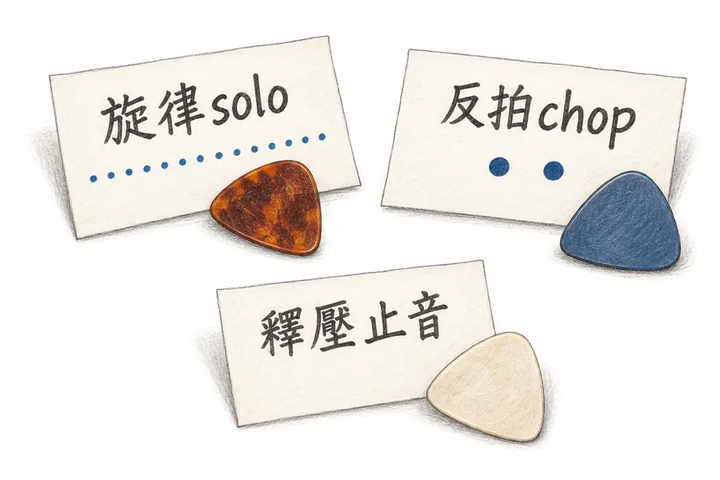
圖解 18.4 Bluegrass 藍草音樂（示意）
曼陀林在這個合奏裡，有兩套截然不同的任務。
| 任務 | 要做什麼 | 技術重點 |
|---|---|---|
| 領奏（lead break） | 把旋律推到前面 | 清楚的單音起音、滑音（slides）、雙音、藍調語氣、快速交替撥弦（alternate picking） |
| 伴奏（chop） | 在 2、4 拍打出短促的後拍（backbeat） | 短、乾、乾淨，不能拖 |
如果只會領奏、不懂得讓出空間；或只會切音、不理解樂句（phrase），那就只掌握了半套語法。
常見誤解：Monroe 風格＝所有藍草曼陀林。
並不是。後來的演奏者發展出交叉撥弦（crosspicking）、更複雜的和聲、爵士影響，以及新的聲響。Sam Bush 推動了新草音樂（newgrass）；David Grisman 融合藍草與爵士等來源，建立了所謂的「Dawg music」。藍草名人堂的 Grisman 傳記，也把這種跨界定位視為他的重要貢獻。〔S1806〕
18.5 老式傳統音樂（Old time）
老式音樂（old-time）的曲目，常和小提琴曲調（fiddle tunes）、方塊舞（square dance）、斑鳩琴加吉他的弦樂隊文化連在一起。
曼陀林可能跟著小提琴吹旋律，也可能只提供節奏。
它的語法通常更重視「連續不斷的舞蹈脈動」。藍草音樂則常安排各樂器輪流獨奏。
演奏小提琴曲調時，空弦（open strings）、持續低音（drones）、雙音都很重要。
如果彈得太乾淨、每個音都像古典練習曲一樣分開，反而可能失去律動（groove）。
有些裝飾音和「弓法造成的重音」，需要轉譯成撥弦模式（pick pattern）。讓撥弦動作呈現原曲的重音與呼吸。
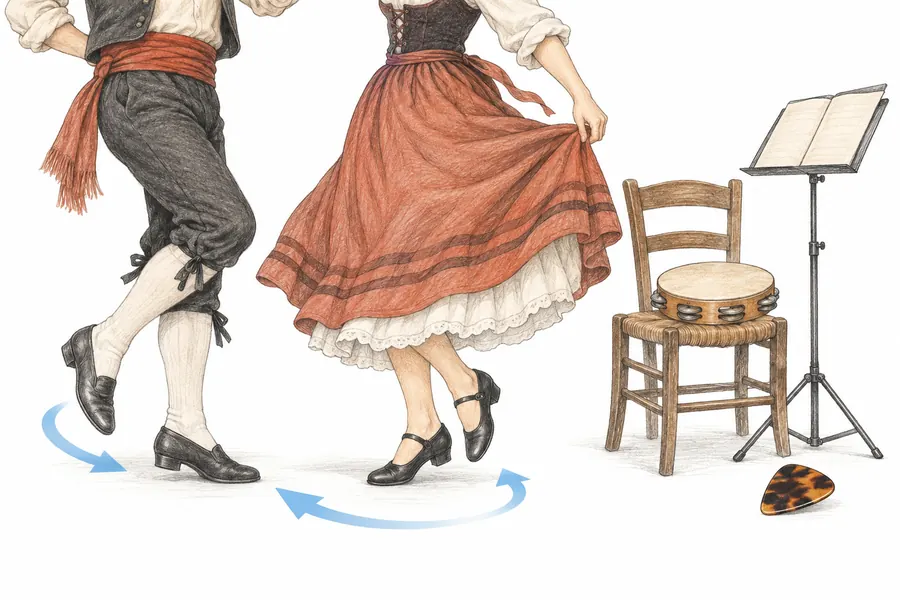
圖解 18.5 Old time 傳統音樂（示意）
學老式音樂最有效的方法，是跟代表錄音一起反覆演奏。
先抓樂句長度、弱起音（pickup notes）、重音，再加裝飾。
樂譜只能記下音高與節奏骨架。真正的細微時間差（microtiming），通常存在於口耳相傳與錄音裡。
18.6 愛爾蘭傳統音樂
愛爾蘭傳統音樂檔案館（Irish Traditional Music Archive，簡稱 ITMA）的館藏與出版資料顯示：
曼陀林已經成為當代愛爾蘭傳統音樂中看得見的樂器。
也有專門研究在討論它的角色。
ITMA 也收錄 Brendan O'Regan 等曼陀林／愛爾蘭長頸魯特琴（bouzouki）／吉他演奏者的里爾舞曲（reel）、吉格舞曲（jig）、角笛舞曲（hornpipe）作品。〔S1807〕
在愛爾蘭舞曲裡，曼陀林常以單音旋律為主。
重點是 reel、jig 這種特定節奏的律動感（lift）。
右手要注意重音模式（accent pattern）與裝飾音的時間點。
三連音（triplet）、切音（cut）、滾音（roll）這類裝飾，必須依照撥弦動作重新設計。不能機械式模仿笛子或小提琴。
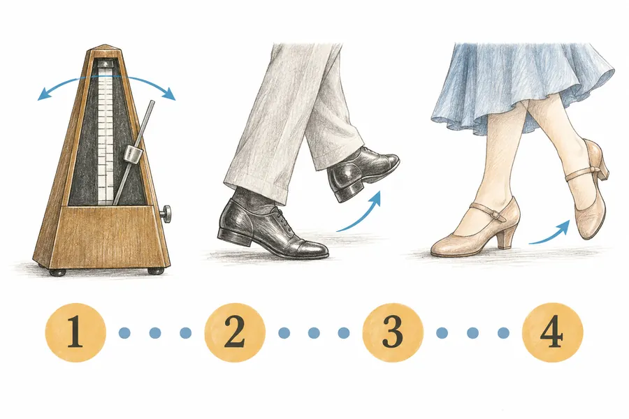
圖解 18.6 愛爾蘭傳統音樂（示意）
八度曼陀林（octave mandolin）、愛爾蘭長頸魯特琴，也常出現在同一個音樂圈裡。
這些樂器的名稱和調弦很容易搞混。
標準曼陀林的高音起音，很適合拉旋律。
八度樂器則常更適合伴奏，或負責低音域的旋律。
編曲時要看實際的調弦與音域（register），再決定各樂器的聲部分工。
18.7 秀羅（Choro）與巴西的 Bandolim
巴西秀羅（choro）裡的班多林（bandolim），雖然和曼陀林同屬一個家族，但已經發展出自己的演奏文化。
Jacob do Bandolim 是二十世紀最具代表性的人物之一。
莫雷拉・塞勒斯研究所（Instituto Moreira Salles，簡稱 IMS）保存了大量與 Jacob、「黃金時代」（Época de Ouro）樂團、作曲家 Radamés Gnattali 相關的錄音與文獻。
例如 IMS 對《肖像》（Retratos）的資料就記錄了：Jacob 在 1964 年錄製這部作品，並呈現他和作曲家／編曲者之間的密切合作。〔S1808〕
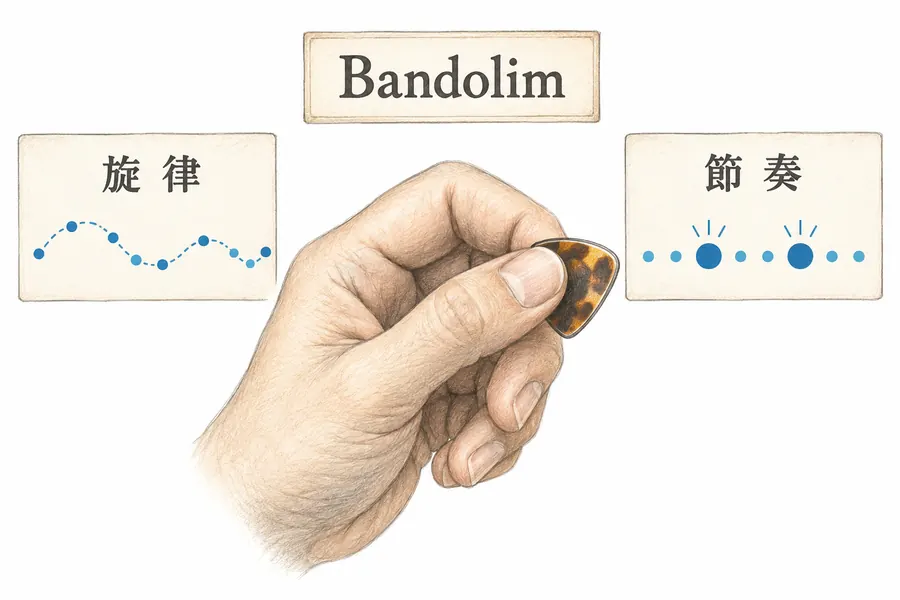
圖解 18.7 Choro 與巴西 Bandolim（示意）
秀羅的旋律常有高度切分音（syncopation）、快速裝飾、精準的觸弦方式（articulation），加上複雜的和聲背景。
常見誤解：Bandolim 只是「巴西版的顫音曼陀林」。
並不是。很多段落靠的是清楚的單音起音、細密的樂句處理，以及和吉他（violão）、小四弦琴（cavaquinho）、手鼓（pandeiro）之間的對話。
伴奏小組（regional）的節奏與和聲流動，是獨奏旋律不能忽略的基礎。
Jacob 在 1964 年的書信裡甚至提到：為了 Gnattali 的《肖像》，他從「一直排練」轉向更細緻地「研究」作品。
這反映出一件事：班多林的曲目，同時跨越了口傳的秀羅與書面的室內樂寫作。〔S1809〕
18.8 爵士搖擺（Swing）與 Dawg
曼陀林在爵士樂裡不是主流樂器。所以演奏者必須主動解決幾個問題：伴奏和弦（comping）要放哪個音域、和弦要省略什麼、延音怎麼處理。
四個弦組的限制，反而有利於精簡的聲部排列（voicing）。
三音（third）、七音（seventh）、延伸音（tension）可以清楚呈現。低音與根音交給其他樂器。
搖擺語法需要八分音符的感覺（eighth-note feel），不能只是把古典的交替撥弦加快。
重音、音長、樂句位置，才決定搖不搖擺。
和弦伴奏可以用短促的和弦點（chord stabs）、聲部連貫的三音形狀（voice-led three-note shapes），或分解和弦織體。
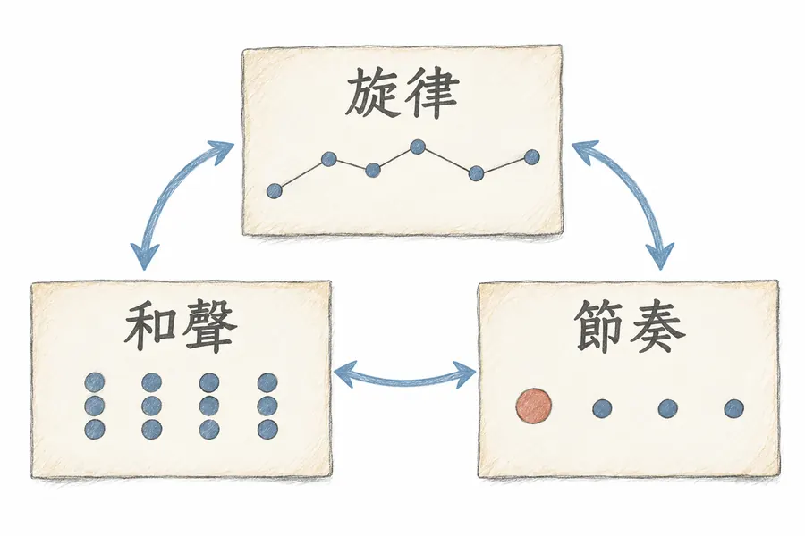
圖解 18.8 爵士 Swing 與 Dawg（示意）
David Grisman 的「Dawg music」是重要的跨界案例。
藍草名人堂形容他的風格受到藍草、爵士等多種來源影響，並形成獨特的語言。
這種音樂提醒我們：不同傳統可以互相結合，長出新的音樂語言。〔S1806〕
18.9 流行音樂與影視配樂
在現代製作裡，曼陀林不一定會用到完整的傳統技法。
它可能只負責三件事之一：
- 用空弦分解和弦，提供高頻的亮點（sparkle）
- 用顫音製造懷舊色彩
- 加 double 木吉他、小提琴線條或合成器固定音型（synth ostinato）
這時候最重要的，是編曲上留給它多少空間（arrangement space）。
錄音時，雙弦同時發聲的起音，很容易占據 2–5 kHz 這個頻段。
如果同時和木吉他、明亮的鋼琴、Hi-hat 密集演奏，整個聲音會顯得擁擠。
編曲可以從四個地方留位置：音域、音符密度、麥克風位置（mic placement）、等化（EQ）。
讓曼陀林和其他聲部都能被清楚聽見。
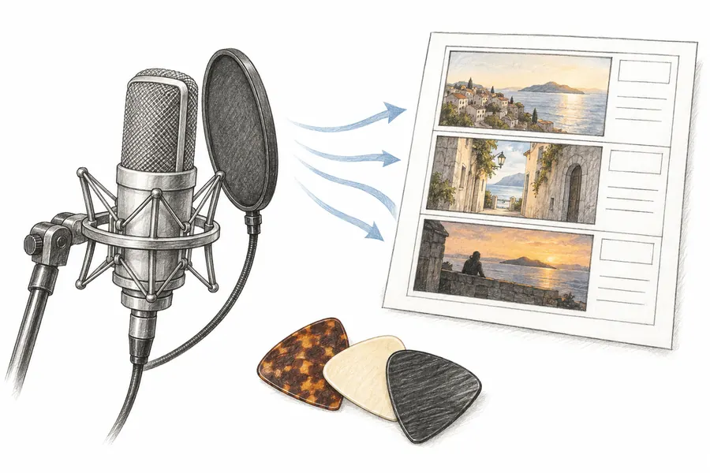
圖解 18.9 流行音樂與影視配樂（示意）
電曼陀林（electric mandolin）又開啟了另一套語法。
實心琴身（solid-body）可以用延音、效果器、破音（overdrive），甚至做成五弦來增加低音 C。
常見誤解：這些聲音「不算真正的曼陀林」。
不該這樣看。它們是這個樂器家族持續演化的一部分，不是偏離。
18.10 曼陀林樂團的編制
歷史上的曼陀林樂團，通常包含這些聲部：曼陀林一、曼陀林二、曼陀拉、曼陀大提琴、吉他、貝斯。
美國早期甚至會加入斑鳩琴和鋼琴。
美國古典曼陀林協會（Classical Mandolin Society of America，簡稱 CMSA）與國會圖書館的資料都顯示一件事：
家族樂器與記譜制度，是這個樂團傳統的重要部分。〔S1804〕〔S18010〕
編曲時最常見的問題是：所有上聲部同時顫音。
結果就是中高頻過度密集，聽起來像一團霧。
更有效的做法是分工織體（texture）：
| 聲部 | 角色 | 建議手法 |
|---|---|---|
| 曼陀林一 | 主旋律 | 持續顫音 |
| 曼陀林二 | 內聲部節奏 | 節奏型單音 |
| 曼陀拉 | 中聲部支撐 | 較長的音 |
| 曼陀大提琴 | 對位線條 | 副旋律（counterline） |
| 吉他／貝斯 | 建立脈動 | 和弦與低音 |
各聲部可以依角色選用顫音、單音或分解和弦，形成清楚的層次。
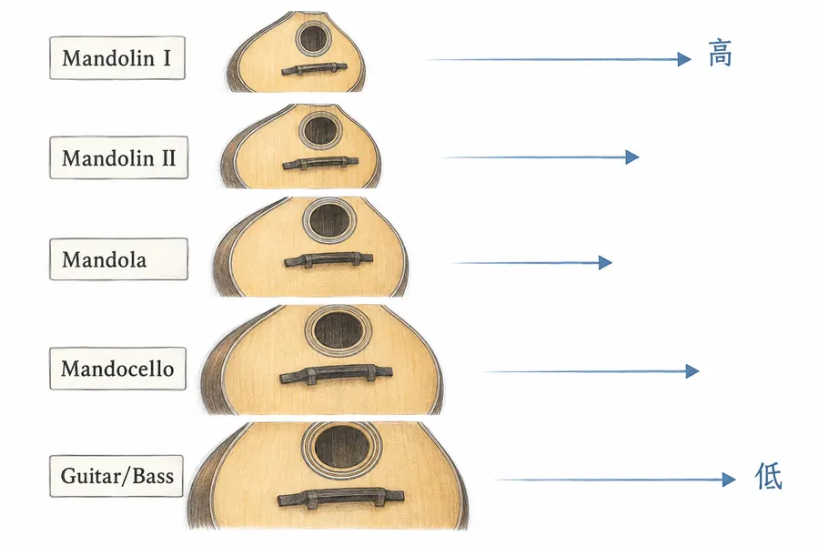
圖解 18.10 曼陀林樂團的編制（示意）
音域重疊要特別小心。
如果曼陀林二和曼陀拉都在同一個音域做密集和聲，聲音會混濁。
把其中一個聲部移到更低的地方，或改成節奏型，清晰度通常會好很多。
18.11 弦樂與鋼琴作品的改編
小提琴一聲部（Violin I），通常可以直接對應到曼陀林一的音域。但延音不一樣。
中提琴（Viola）要對應到 C 調的曼陀拉時，還要處理譜號（clef）與記譜慣例的問題。
大提琴（Cello）的線條要交給曼陀大提琴時，也要確認有效弦長（scale）、調弦、可用的低音。
CMSA 的記譜指南特別提醒：曼陀拉、曼陀大提琴的歷史記譜法，存在多種不同系統。〔S18010〕
弓弦樂器的長音鋪底（pad），如果全部改成顫音，改編聽起來會太厚。
可以把原本一條持續的內聲部，改成分解和弦、重複脈動，或交給吉他延音。
把真正需要歌唱性（cantabile）的線條，留給顫音。
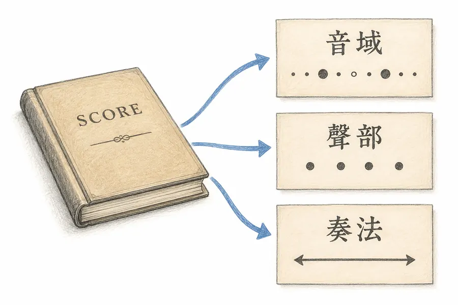
圖解 18.11 弦樂與鋼琴作品的改編（示意）
鋼琴改編則是相反的問題。
原作可能同時有十個音在響。曼陀林樂團必須先找出和聲功能，再決定哪些聲部要保留。
改編時要重新安排音域、聲部與和聲密度。
18.12 案例：同一首 Reel 的跨風格演奏
同一首 reel（里爾舞曲），在三種風格裡會長得很不一樣。
| 風格 | 追求什麼 | 會加入什麼 |
|---|---|---|
| 古典 | 均勻的觸弦、清楚的樂句 | 少量顫音 |
| 藍草 | 推進感與獨奏張力 | 切音伴奏、雙音、領奏式重音 |
| 愛爾蘭 | 舞蹈律動 | 裝飾音、連續不斷的旋律 |
音高可以九成相同，聽起來卻完全不同。
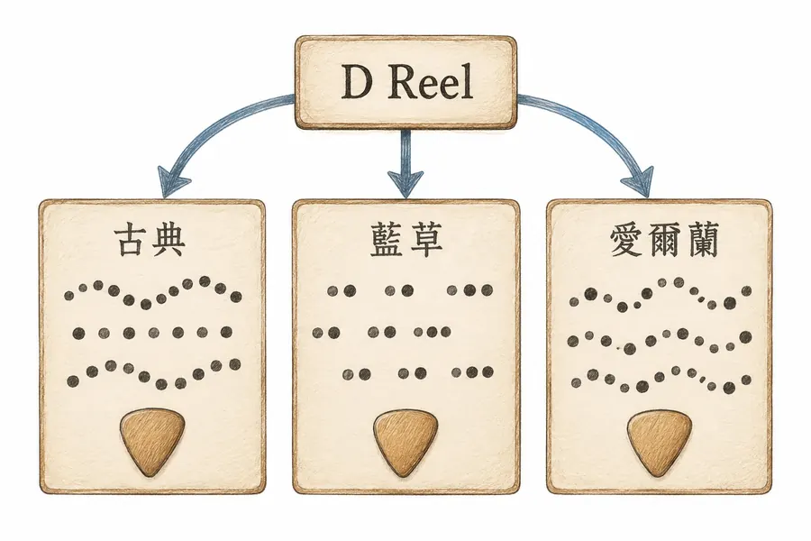
圖解 18.12 同一旋律的風格改編思路；點線表示相對密度（示意）
常見誤解：換一把琴，就等於換一種風格。
不是。如果右手語法不變，例如拿 F 型琴演奏所有音樂都用 Monroe 式起音，那只是音色變了，不是風格轉換。真正的跨風格，要學時間感（time feel）、裝飾語彙、合奏互動，還有錄音傳統。
最好的學習方法是：每種風格選 3–5 位代表演奏者與錄音。
先模仿樂句，再分析技巧。
這比先看「十個愛爾蘭曼陀林樂句」更能建立真正的語言。
表 18-1｜不同音樂傳統中的曼陀林角色
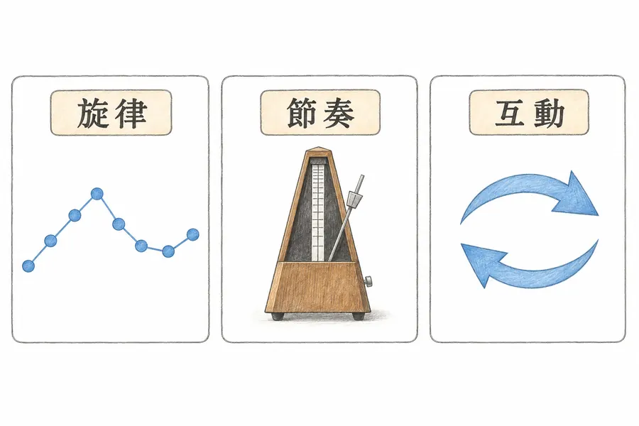
| 傳統 | 典型角色 | 右手重點 | 和聲／節奏 | 學習優先順序 |
|---|---|---|---|---|
| 義大利古典 | 獨奏／室內樂旋律 | 顫音、觸弦方式 | 以譜面為主 | 歷史型制＋方法書＋錄音 |
| 藍草 | 領奏＋後拍 | 單音、雙音、切音 | 2/4 拍律動 | Monroe 系譜＋即興合奏（jam） |
| 愛爾蘭 | 舞曲旋律 | 單音、三連音與裝飾 | reel／jig 律動 | 大量跟錄音 |
| 秀羅 | 獨奏旋律 | 精準觸弦、裝飾音 | 伴奏組和聲與切分音 | Jacob／黃金時代錄音 |
| 爵士／Dawg | 即興＋伴奏和弦 | 搖擺、交叉撥弦 | 延伸和聲 | 聲部連接＋語彙 |
圖解 表 18-1｜不同音樂傳統中的 Mandolin 角色（示意）
自我學習題庫

學習檢查：作答、核對、複習
先自己作答，再看答案。答錯時回到本章相關小節重新讀一次。
1. 藍草音樂中，曼陀林常見的節奏角色是？
- A. 切音後拍（chop backbeat）
- B. 持續的琴弓長音
- C. 只彈低音
- D. 完全不伴奏
2. 演奏愛爾蘭舞曲時，重要重點之一是？
- A. 節奏律動與裝飾音的時間點
- B. 只追求最大音量
- C. 全部改成顫音
- D. 取消重音
3. 曼陀林樂團編曲時要注意？
- A. 不同家族樂器的音域與角色
- B. 所有聲部都彈一樣
- C. 只看琴身大小
- D. 只用一個和弦
答案：1.A 2.A 3.A
本章主要查證來源

查證來源：找原文、核條件、留紀錄
【S1801】Carlo Munier：Scuola del Mandolino 等教本。 十九至二十世紀古典曼陀林技術系統。
https://imslp.org/wiki/Metodo_completo_per_la_divisione_(Munier%2C_Carlo)
【S1802】Raffaele Calace：Metodo per mandolino, Opp.37–42。 古典曼陀林技法與歷史教學系統。
https://imslp.org/wiki/Metodo_per_mandolino_(Calace%2C_Raffaele)
【S1803】Library of Congress, NLS Music Notes：From Baroque to Bluegrass, a Globe-Trotting Instrument（2020）。 美國曼陀林熱潮、BMG 文化與藍草音樂前史。
https://blogs.loc.gov/nls-music-notes/2020/08/from-baroque-to-bluegrass-a-globe-trotting-instrument/
【S1804】Library of Congress：The Suffragettes: March（1915）。 歷史曼陀林樂團的實際編制（三把曼陀林、曼陀拉、曼陀大提琴、吉他、斑鳩琴、鋼琴）。
https://www.loc.gov/item/2017562356/
【S1805】Bluegrass Music Hall of Fame & Museum：Bill Monroe biography。 藍草音樂歷史、Monroe 的影響與 1945 年經典編制。
https://www.bluegrasshall.org/inductees/bill-monroe/
【S1806】Bluegrass Music Hall of Fame & Museum：David Grisman biography。 Dawg music、藍草與爵士的跨界背景。
https://www.bluegrasshall.org/inductees/david-grisman/
【S1807】Irish Traditional Music Archive：Brendan O'Regan compositions / publications。 曼陀林在當代愛爾蘭傳統音樂中可查證的館藏與研究線索。
https://www.itma.ie/saothar/brendan-oregan/
【S1808】Instituto Moreira Salles / Rádio Batuta：Suíte Retratos, 3º movimento – Anacleto de Medeiros。 Jacob do Bandolim 1964 年《Retratos》錄音與秀羅歷史資料。
https://radiobatuta.ims.com.br/programas/equipe-ims-bia-paes-leme/suite-retratos-3-movimento-anacleto-de-medeiros
【S1809】Instituto Moreira Salles：Jacob do Bandolim 1964 letter to Radamés Gnattali。 Jacob 對《Retratos》學習與研究過程的第一手書信。
https://correio.ims.com.br/carta/valeu-ora-se-valeu/
【S18010】Classical Mandolin Society of America：Music Notation for Mandolin Family Instruments。 曼陀拉、曼陀大提琴等家族樂器的記譜系統與地域差異。
https://classicalmandolinsociety.org/wp-content/uploads/Music_Notation_for_Mandolin_Family_Instruments_v3.pdf
Part F 選琴、研究與日常照護
認識製琴師與型號資料，綜合結構和演奏需求，完成選琴、紀錄與照護。
閱讀範圍 第 19 章至第 21 章